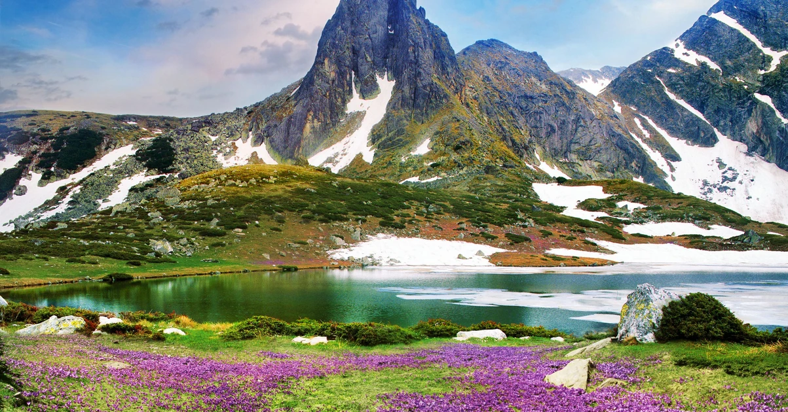

Bulgaria has a rich natural environment that includes forests, mountains, rivers, and protected wildlife areas. To preserve these natural resources, the country has established several national parks and nature reserves. These areas protect important ecosystems while allowing visitors to explore and appreciate the beauty of nature.
Rila National Park is the largest national park in Bulgaria and contains some of the most impressive natural landscapes in the country. It includes mountain peaks, glacial lakes, dense forests, and rare wildlife species. The park is also home to the famous Rila Monastery, one of Bulgaria’s most significant cultural landmarks.
Pirin National Park is another important protected area. It features rugged mountain terrain, clear mountain lakes, and ancient pine forests. Because of its exceptional biodiversity and natural beauty, the park has been recognized as a UNESCO World Heritage Site.
Central Balkan National Park protects a large portion of the Balkan Mountain range. This park is known for its dramatic waterfalls, deep valleys, and diverse wildlife. Visitors often explore the park through hiking trails that pass through forests and mountain landscapes.